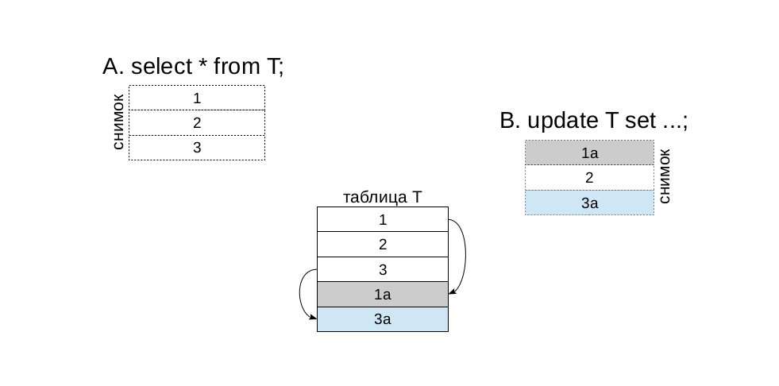

Latest version - 9.5.3/ 13 мая 2016
Процессы и память

Организация данных
Кластер - несколько баз данных
БД - логичекое оргнизация данных
Табличное пространиство - физическое хранение данных - пространство фс где хранится обьект БД

Пример

Обработка запросов
Базы данных
Экземпляр СУБД управляет кластером, состоящим
из нескольких баз данных
Initdb создает три базы данных:
template0 шаблон базы,
изменения не рекомендуются
template1 шаблон базы, из которой
по умолчанию копируются другие;
можно добавлять общие объекты и расширения
postgres база для подключений по умолчанию
Новая база всегда создается клонированием существующей
Таблицы системного каталога начинаются с pg_